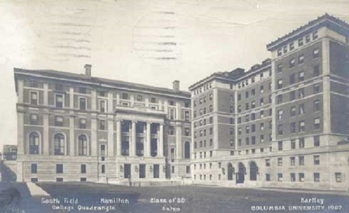

Studies in America & Ph.D
For the next five years in the United States, Pupin worked as a manual laborer (most notably at the biscuit factory on Cortlandt Street in Manhattan) while he learned English, Greek and Latin. He also gave private lectures. After three years of various courses, in the autumn of 1879 he successfully finished his tests and entered Columbia College, where he became known as an exceptional athlete and scholar. A friend of Pupin's predicted that his physique would make him a splendid oarsman, and that Columbia would do anything for a good oarsman. A popular student, he was elected president of his class in his Junior year. He graduated with honors in 1883 and became an American citizen at the same time
He obtained his Ph.D. at the University of Berlin under Hermann von Helmholtz and in 1889 he returned to Columbia University to become a lecturer of mathematical physics in the newly formed Department of Electrical Engineering. Pupin's research pioneered carrier wave detection and current analysis.
Pupin completed his studies in 1883 as one of the best students, especially in the field of physics and mathematics, which gave him a diploma. Later, he went back to Europe, initially the United Kingdom (1883–1885), where he continued his schooling at the University of Cambridge. He was an early investigator into X-ray imaging, but his claim to have made the first X-ray image in the United States is incorrect. He learned of Röntgen's discovery of unknown rays passing through wood, paper, insulators, and thin metals leaving traces on a photographic plate, and attempted this himself. Using a vacuum tube, which he had previously used to study the passage of electricity through rarefied gases, he made successful images on January 2, 1896. Edison provided Pupin with a calcium tungstate fluoroscopic screen which, when placed in front of the film, shortened the exposure time by twenty times, from one hour to a few minutes. Based on the results of experiments, Pupin concluded that the impact of primary X-rays generated secondary X-rays. With his work in the field of X-rays, Pupin gave a lecture at the New York Academy of Sciences. He was the first person to use a fluorescent screen to enhance X-rays for medical purposes. A New York surgeon, Dr. Bull, sent Pupin a patient to obtain an X-ray image of his left hand prior to an operation to remove lead shot from a shotgun injury. The first attempt at imaging failed because the patient, a well-known lawyer, was "too weak and nervous to be stood still nearly an hour" which is the time it took to get an X-ray photo at the time. In another attempt, the Edison fluorescent screen was placed on a photographic plate and the patient's hand on the screen. X-rays passed through the patients hand and caused the screen to fluoresce, which then exposed the photographic plate. A fairly good image was obtained with an exposure of only a few seconds and showed the shot as if "drawn with pen and ink." Dr. Bull was able to take out all of the lead balls in a very short time.
Source: Wikipedia